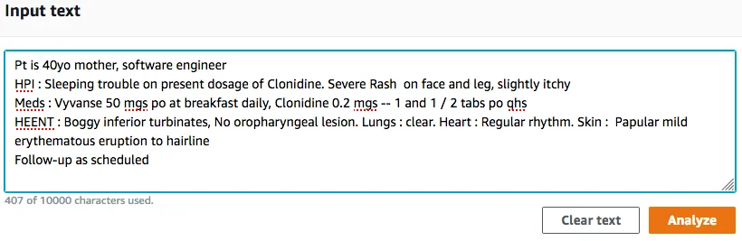
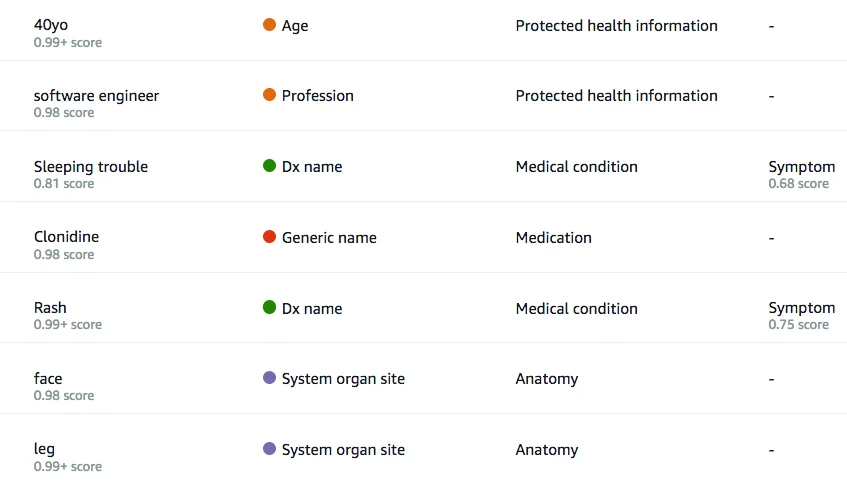

Published: 2018-11-27 | Originally published at AWS Blog
As the son of a Gastroenterologist and a Dermatologist, I grew up listening to arcane conversations involving a never-ending stream of complex medical terms: human anatomy, surgical procedures, medication names… and their abbreviations. A fascinating experience for a curious child wondering whether his parents were wizards of some sort and what all this gibberish meant.
For this reason, I am very happy to announce Amazon Comprehend Medical , an extension of Amazon Comprehend for healthcare customers.
A quick reminder on Amazon Comprehend
Amazon Comprehend was launched last year at AWS re:Invent. In a nutshell, this Natural Language Processing service provides simple real-time APIs for language detection, entity categorization, sentiment analysis, and key phrase extraction. In addition, it also lets you organize text documents automatically using an unsupervised learning technique called “ topic modeling “.
Used by FINRA, LexisNexis, or Isentia, Amazon Comprehend can understand general-purpose text. However, given the very specific nature of clinical documents, healthcare customers have asked us to build them a version of Amazon Comprehend tailored to their unique needs.
Introducing Amazon Comprehend Medical
Amazon Comprehend Medical builds on top of Amazon Comprehend and adds the following features:
A word of caution: Amazon Comprehend Medical may not accurately identify protected health information in all circumstances, and does not meet the requirements for de-identification of protected health information under HIPAA. You are responsible for reviewing any output provided by Amazon Comprehend Medical to ensure it meets your needs.
Now let me show you how to get started with this new service. First, I’ll use the AWS Console and then I’ll run a simple Python example.
Using Amazon Comprehend Medical in the AWS Console
Opening the AWS Console, all we have to do is paste some text and click on the ‘Analyze’ button.

The document is processed immediately. Entities are extracted and highlighted: we see personal information in orange, medication in red, anatomy in purple and medical conditions in green.

Personal Identifiable Information is correctly picked up. This is particularly important for researchers who need to anonymize documents before exchanging or publishing them. Also, ‘rash’ and ‘sleeping trouble’ are correctly detected as medical conditions diagnosed by the doctor (‘Dx’ is shorthand for ‘diagnosis’). Medications are detected as well.
However, Amazon Comprehend Medical goes beyond the simple extraction of medical terms. It’s also able to understand complex relationships, such as the dosage for a medication or detailed diagnosis information. Here’s a nice example.
As you can see, Amazon Comprehend Medical is able to figure out abbreviations such as ‘ po ‘ and ‘ qhs ‘: the first one means that the medication should be taken orally and the second is an abbrevation for ‘ quaque hora somni ‘ (yes, it’s Latin), i.e. at bedtime.
Let’s now dive a little deeper and run a Python example.
Using Amazon Comprehend Medical with the AWS SDK for Python
First, let’s import the boto3 SDK and create a client for the service.
import boto3
comprehend = boto3.client(service_name='comprehendmedical')
Now let’s call the
detect_entity
API on a text sample and print the detected entities.
text = "Pt is 40yo mother, software engineer HPI : Sleeping trouble on present
dosage of Clonidine. Severe Rash on face and leg, slightly itchy Meds : Vyvanse
50 mgs po at breakfast daily, Clonidine 0.2 mgs -- 1 and 1 / 2 tabs po qhs HEENT :
Boggy inferior turbinates, No oropharyngeal lesion Lungs : clear Heart : Regular
rhythm Skin : Papular mild erythematous eruption to hairline Follow-up as scheduled"
result = comprehend.detect_entities(Text=text)
entities = result
for entity in entities:
print(entity)
Take a look at this medication entity: it has three nested attributes (dosage, route and frequency) which add critically important context.
{u'Id': 3,
u'Score': 0.9976208806037903,
u'BeginOffset': 145, u'EndOffset': 152,
u'Category': u'MEDICATION',
u'Type': u'BRAND_NAME',
u'Text': u'Vyvanse',
u'Traits': [],
u'Attributes': [
{u'Id': 4,
u'Score': 0.9681360125541687,
u'BeginOffset': 153, u'EndOffset': 159,
u'Type': u'DOSAGE',
u'Text': u'50 mgs',
u'Traits': []
},
{u'Id': 5,
u'Score': 0.99924635887146,
u'BeginOffset': 160, u'EndOffset': 162,
u'Type': u'ROUTE_OR_MODE',
u'Text': u'po',
u'Traits': []
},
{u'Id': 6,
u'Score': 0.9738683700561523,
u'BeginOffset': 163, u'EndOffset': 181,
u'Type': u'FREQUENCY',
u'Text': u'at breakfast daily',
u'Traits': []
}]
}
Here is another example. This medical condition entity is completed by a ‘negation’ trait, meaning that the condition was not detected, i.e. this patient doesn’t have any oropharyngeal lesion.
{u'Category': u'MEDICAL_CONDITION',
u'Id': 16,
u'Score': 0.9825472235679626,
u'BeginOffset': 266, u'EndOffset': 286,
u'Type': u'DX_NAME',
u'Text': u'oropharyngeal lesion',
u'Traits': [
{u'Score': 0.9701067209243774, u'Name': u'NEGATION'},
{u'Score': 0.9053299427032471, u'Name': u'SIGN'}
]}
The last feature I’d like to show you is extracting personal information with the detect_phi API.
result = comprehend.detect_phi(Text=text)
entities = result
for entity in entities:
print(entity)
A couple of pieces of personal information are present in this text and we correctly extract them.
{u'Category': u'PERSONAL_IDENTIFIABLE_INFORMATION',
u'BeginOffset': 6, u'EndOffset': 10, u'Text': u'40yo',
u'Traits': [],
u'Score': 0.997914731502533,
u'Type': u'AGE', u'Id': 0}
{u'Category': u'PERSONAL_IDENTIFIABLE_INFORMATION',
u'BeginOffset': 19, u'EndOffset': 36, u'Text': u'software engineer',
u'Traits': [],
u'Score': 0.8865673542022705,
u'Type': u'PROFESSION', u'Id': 1}As you can see, Amazon Comprehend can help you extract complex information and relationships, while being extremely simple to use.
Once again, please keep in mind that Amazon Comprehend Medical is not a substitute for professional medical advice, diagnosis, or treatment. You definitely want to closely review any information it provides and use your own experience and judgement before taking any decision.
Now Available
I hope this post was informative. You can start building applications with Amazon Comprehend Medical today in the following regions: US East (Northern Virginia), US Central (Ohio), US West (Oregon) and Europe (Ireland).
In addition, the service is part of the AWS free tier : for three months after signup, the first 25,000 units of text (or 2.5 million characters) are free of charge.
Why don’t you try it on your latest prescription or medical exam and let us know what you think?
— Julien ;
{kind=link}